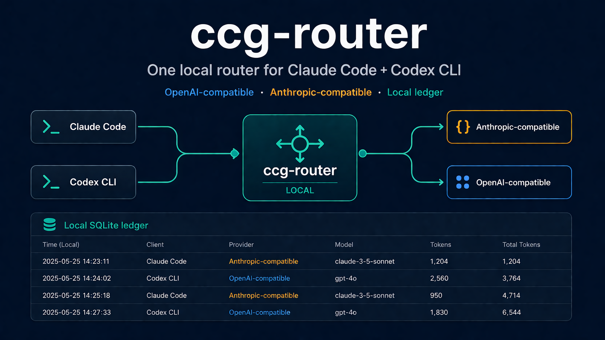

One local router for Claude Code and Codex CLI.
Run an OpenAI-compatible and Anthropic-compatible local proxy on one port, share upstreams, switch routing strategies, and keep a local SQLite usage ledger.

brew install XZXY-AI/tap/ccg-router
ccg-router init
export ANTHROPIC_BASE_URL=http://127.0.0.1:17180
export OPENAI_BASE_URL=http://127.0.0.1:17180
ccg-router startClaude Code router
Accept Anthropic-compatible /v1/messages traffic locally.
Codex CLI router
Accept OpenAI-compatible /v1/chat/completions traffic on the same daemon.
Local ledger
Record request metadata in SQLite without storing prompts or provider keys.
What works today
v0.1 is a non-streaming public preview with routing strategies, upstream config, signed preset registry loading, release binaries, Homebrew, and a read-only local dashboard.
What is next
Streaming passthrough, richer dashboard metrics, more adapters, encrypted ledger options, and provider preset workflows.
Search topics
Claude Code router Codex CLI router OpenAI-compatible proxy Anthropic-compatible proxy local LLM router AI coding CLI routerPopular searches
ANTHROPIC_BASE_URL
Point Claude Code at a local Anthropic-compatible router.
OPENAI_BASE_URL
Point Codex CLI at a local OpenAI-compatible router.
Usage tracking
Track AI coding request metadata in a local SQLite ledger.